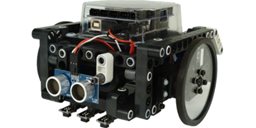
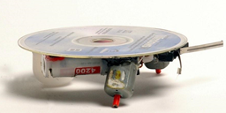
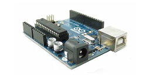

Aprenda robótica de forma prática e divertida desenvolvendo projetos simples e de baixo custo

Robótica Livre - Construa robôs usando o Arduino.
Projetos

Robótica Simples - Construa robôs usando sucata.
Projetos

Arduino - Aprenda Arduino com foco em IoT, automação e robótica.
Saiba mais